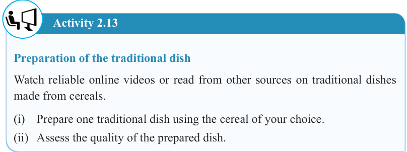
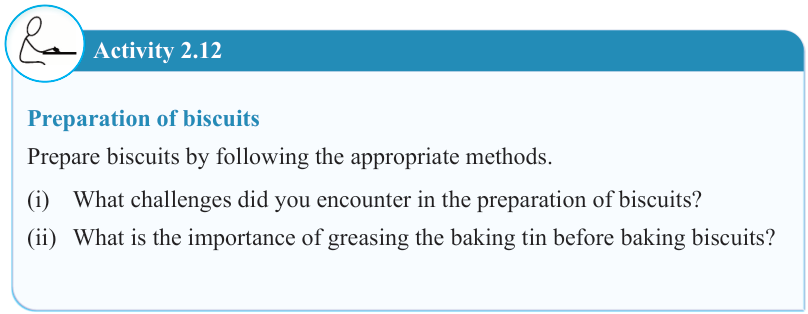

43


Food and Human Nutrition

Form Two

Activity 2.12
Preparation of biscuits
Prepare biscuits by following the appropriate methods.
(i) What challenges did you encounter in the preparation of biscuits?
(ii) What is the importance of greasing the baking tin before baking biscuits?
Chocolate corn flour mould
Ingredients (Serve 4 people)
275 ml milk
60 g corn flour
28 g sugar
56 g grated chocolate or powder
2 ml vanilla essence
Method
1. Blend the corn flour with a little milk until it becomes smooth.
2. In a cooking pan, heat the remaining milk with the grated or powdered chocolate and sugar, stirring gently until the chocolate dissolves.
3. Add blended corn flour and milk then continue stirring constantly until the paste forms.
4. Lower the heat and cook gently until the mixture thickens and coats the spoon.
5. Add vanilla essence and pour the mixture into a wet mould. Then, serve it as required.
Activity 2.13
Preparation of the traditional dish
Watch reliable online videos or read from other sources on traditional dishes made from cereals.
(i) Prepare one traditional dish using the cereal of your choice.
(ii) Assess the quality of the prepared dish.
17/09/2025 16:30